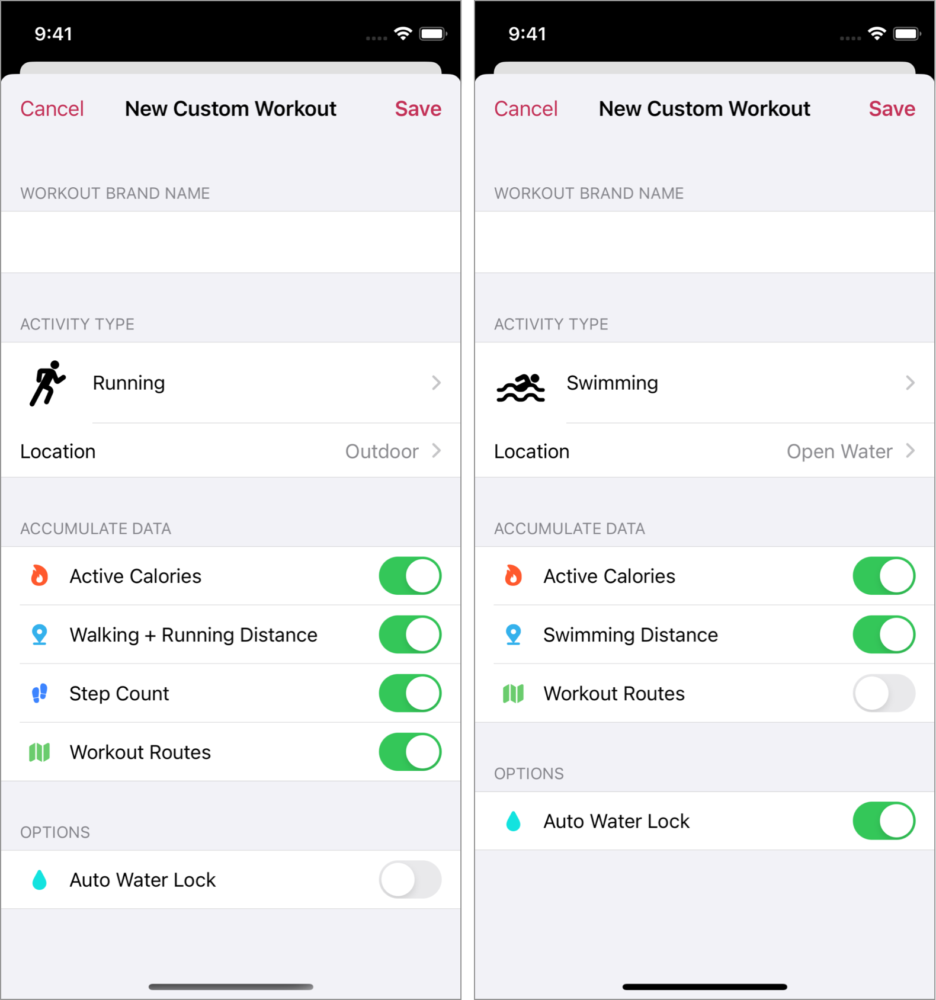
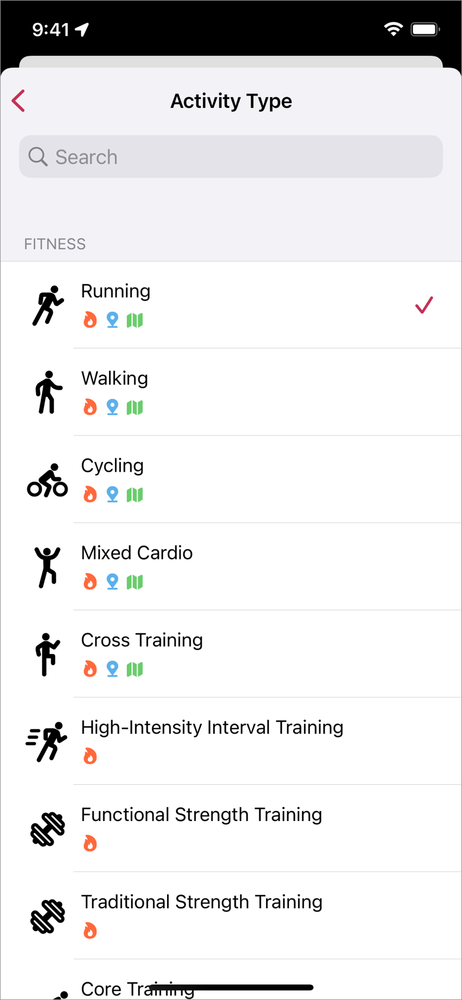

Help
Workout Configuration and Customization
When measuring a workout with the Zones, a configuration of a workout is automatically determined according to type of activities.
These configuration be changed by "Custom Workout". (PRO only)
If you are using the free version, please see Check a Default Configuration.
If you do not have the type of activity you want, you can create it with your own name with a Custom Workout.
1. Workout Configuration
- Workout Name
-
The name registered here is displayed as workout name of recorded result.
This name may be displayed in other applications as well. (Such as Apple's activity app) -
By default it will be the name of the activity type.
In the case of custom workout, please give it a meaningful name freely. - Activity Type
-
If you can not find the activity you want, please select the one that is as close as possible.
You can not add a activity. -
This type is linked with a activity of Apple Health (HealthKit).
Depending on the OS version, measurement may not be possible if there is a version mismatch between iOS and watchOS.
Please do not forget to upgrade watchOS. - Location
- Set the location where to exercise.
- Pool Length
-
It is not displayed except pool swimming.
Lap will be recorded automatically based on this setting.  Active Calories
Active Calories- Register Total Active Calories in the workout.
 Distance
Distance-
Register Total Distance in workout and attach distance data to workout.
This field is not displayed if the activity that don't support distance. -
A source of distance data depends on a activity type.
This label shows a source name of distance.  Route Location
Route Location-
Collect GPS location data and register Route Map.
This field is not displayed if the activity type don't support to distance measurement. -
By turning OFF, you can reduce the power consumption of Apple Watch.
If route map is not needed, please turn it off.  Auto Water Lock
Auto Water Lock- The app will perform water lock automatically at the start of workout.
2. Create a Custom Workout
- Open Zones app on iPhone
- Tap "Settings" of tab
- Tap "Custom Workouts"
- Tap "Create" button
It is possible to change it, it will not be reflected in the recorded workouts.
To Delete, Swipe the line on the Custom Workout List screen.
3. Measurement using Custom Workout
Registered workouts can be selected from "Custom".
In addition, you can check the configuration of the currently selected workout by following the procedure below.
- Force touch on top screen
- Tap "Workout Info"

If it is not synchronized with the latest information, please do Sync Now from settings.
4. Check a Default Configuration
Even in the free version, you can check the default configuration.
- Open Zones on iPhone
- Tap "Settings" of tab
- Tap "Custom Workout"
- Tap "Create"
- Tap Activity

However, "Route Location" is effective only when the location setting is "Outdoor".
5. About activity that don't support distance
Distance data is registered by watchOS to Apple Health (HealthKit).
A interval of distance sample data is usually in units of tens of minutes, but it will be in units of seconds during workout.
However, we have confirmed activities that registration of distance data has a following behavior.
Zones excludes them from distance measurement.
- Distance data is not recorded
- Not recorded in real time to Apple Health
Since these are the specifications of watchOS,
it is impossible to clearly distinguish which activity applies to the above. Please understand.
Below is the reference information we tried with Apple Watch Serires 3 + watchOS 4.2.
- Cross-Country Skiing
- Curling
- Elliptical
- Flexibility
- Rowing
- Stair Stepper
- Step Training
- Skating Sports
- Snow Sports
- Water Fitness
- Water Polo
- Water Sports
Above activities are "1. Distance data is not recorded".
Other than above activities, it is possible to update to the correct distance by doing Re-collect sample data after measurement.
It may be wrong info depending on your environment of use or contents of workout.
Please use it as reference information after understanding.